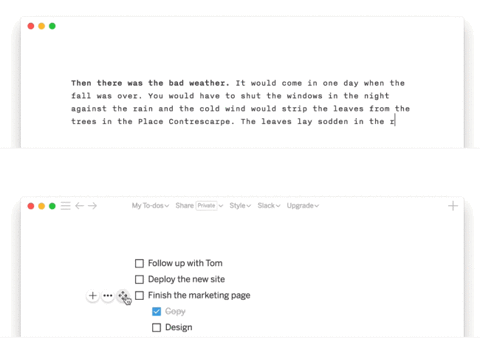
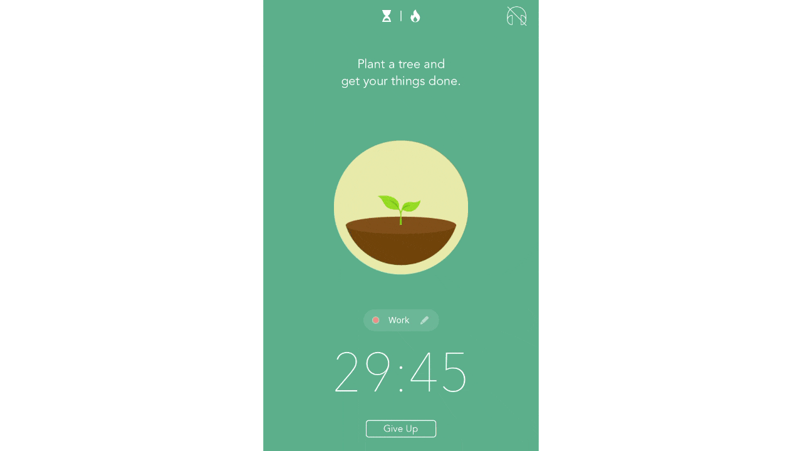
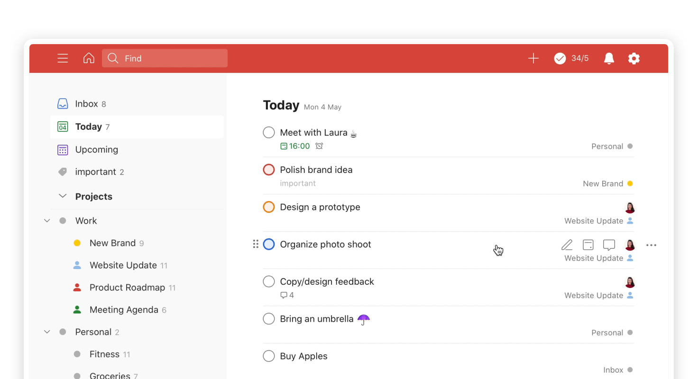
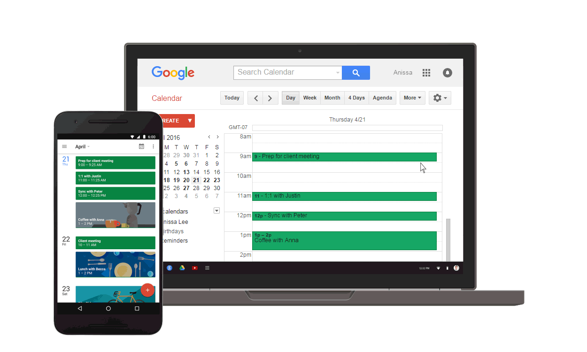
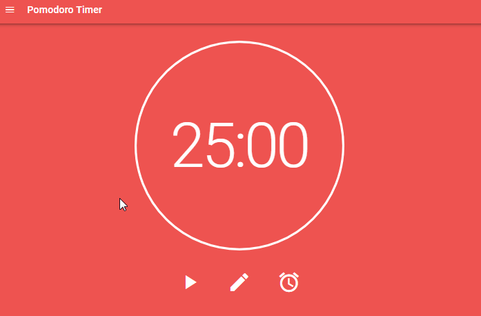
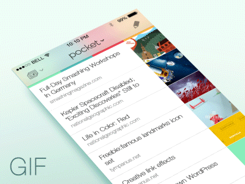
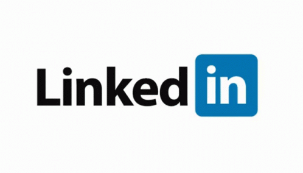
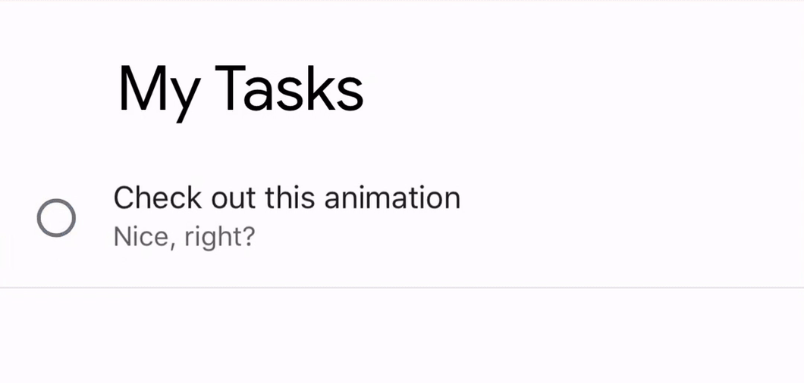
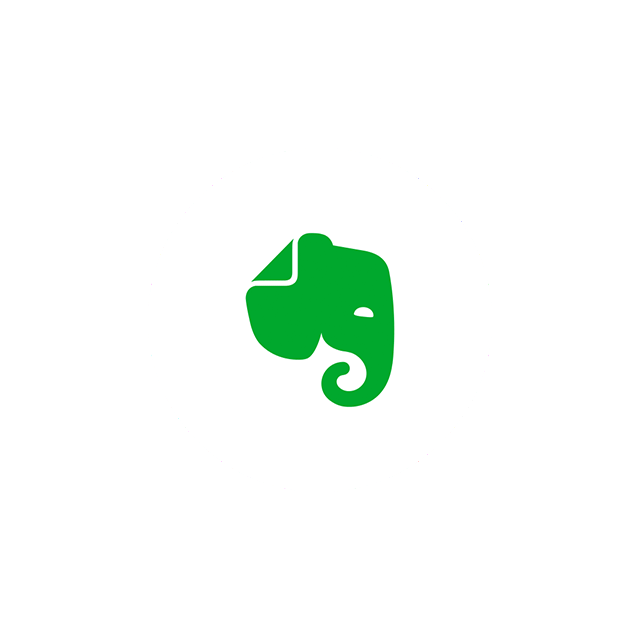
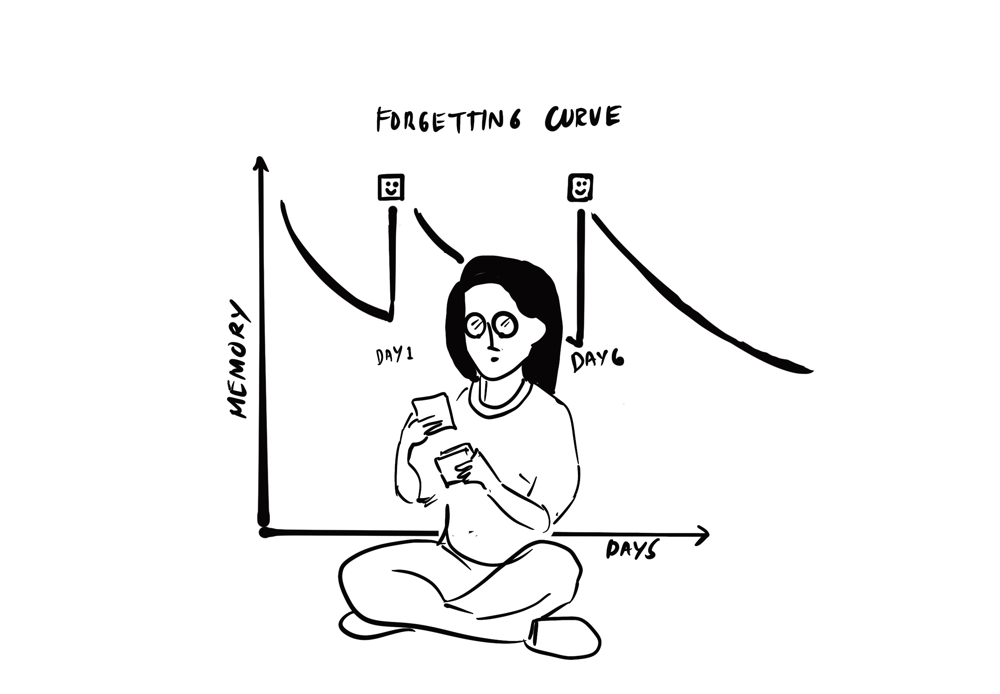

Top 10 Productivity Apps for University students
Oct 28 '21 • Written by Yassen Shopov
📖 10 minute read
I think it is a general consensus that productivity and efficiency are perfectly achievable without the help of software and apps.
However.
Why bother doing everything the analog way when there are a hundred better ways to:
Track your progress
Track your streaks
Manage your notes
Schedule events
Track your grades and study progress
Sadly, when we go into college/university, we are largely unprepared for the new type of study structure. This means that we have to learn to drive the metaphorical “university car” on the go, as it’s already running. Otherwise, we crash and burn.
This list of apps is in no particular order, but it covers some main bases that I believe are important for young people and mainly for students who are just now learning how to build habits. These include learning how to schedule, email management, taking notes and effective studying, task management, and digital housekeeping.
1. Notion
It would come as no surprise that my favorite productivity app would be the first one I recommend, but there is a reason for that.
Notion, the self-proclaimed “all-in-one workspace”, is a data storage and management app that can be used to build pretty much anything. I have personally used it to keep track of my finances, keep track of my creative work as a freelancer, manage my university assignments, and so on. It is free, easy to use (albeit it does have a rather steep learning curve in the beginning), and you can use the Student plan to store an unlimited amount of data on here.
Not sure where to start with Notion? You can use quite a few of my personal templates through the links above.
2. Forest
Forest is one of those apps that many people have heard of but very few have actually used it. All in all, the function is simple - it helps you stay focused and off your phone. When you start up Forest’s timer, it plants a cute digital tree, which keeps growing for the duration of the timer.
However, there’s a catch. If you check your phone during this timed session, the tree dies and you have to start again.
It’s a simple trick and a bit game-like, so it’s a fun way to stay focused.
3. Todoist
A strong contender to Notion in my eyes, Todoist is a very straightforward app with a simple design and powerful functionality. In its essence, it allows you to just log your tasks and assign them different tags. However, it is much ore powerful than that.
Its strongest feat is the intuitive approach when getting input. For example, you just need to type “p1” and it would assign it as Priority 1. If you type “wash car today“, it automatically assigns the task to today. It’s very easy to use, requires almost no technical effort and is widely used by newbies and seasoned students alike.
4. Google Calendar
This app is already installed on most devices anyway, but people tend to underuse it a lot.
Google Calendar can be much more than the place where you add your Uni schedule.
You can add details such as Zoom links and passwords, share events and whole calendars with others, you can have different calendars that you can hide and unhide to get a better overview of your schedule.
I have personally been using it to keep track of my gym sessions, my lectures, my assignments, social activities, and errands. I have also managed to sync it with Notion, so you can use the combined functionality of both apps for maximum productivity.
5. Pomodoro
Pomodoro is an Italian word, and it literally means tomato. The Pomodoro technique is used to refer to a type of kitchen timer in the shape of a tomato that rings after 25 minutes.
It has been documented in research that a study or work schedule consisting of 25 minutes of work, then 5 minutes of rest, and repeat, could lead to optimal amounts of productivity.
There are numerous Pomodoro-inspired apps out there, but the one I use personally is called, well, Pomodoro.
6. Pocket
At one point, you will find yourself making a ton of bookmarks on your web browser, and they’ll keep accumulting without incentivising you to actually read any of the articles/papers. Since we can’t always read an article and make notes on the go, it’s imporant to store the link in a place where you know you’ll find it later.
It would probably be a good idea to categorize and filter those links as well at some point.
All of this is achieved by the free-to-use app, Pocket.
7. Google Drive
Google Drive is one of those things we all have access to, but we criminally underuse it. The free storage space (up to 15 GB), and the syncing option across all devices make it a viable option.
Some cases in which I have used it to store my files include:
Needing to share a whole folder with other students
Needing to print something and not having a USB nearby
Needing a backup copy when modifying important files
Even if it does not directly influence your productivity, the added bonus of having peace of mind with your digital files is priceless. The free version may be more than enough for you, and just for $1-2/month you can get yourself up to 100 GB of free space for your own needs.
8. LinkedIn
Now, this may seem like a rather odd addition in a list of productivity apps.
LinkedIn is a Facebook-esque platform, with a focus on promoting yourself and your work to employers. For more and more jobs, a good social presence is needed, and it would largely expand the scope of your opportunities.
Most students make the mistake of getting into LinkedIn a little bit too late, when they are nearly graduation, and they have missed out on a ton of internship and job opportunities in the meantime. The more time you spend in the beginning, getting to know the platform and posting on it, the better your employment chances one day.
9. Google Tasks
Google Tasks is another very useful app from the Google Suite that serves as a companion app to Google Calendar.
While inside the Calendar app, you can set events, but you can also set Tasks, which can be ticked on and off. These exist in the same workspace, but can be managed separately on the Tasks app, if you want to set additional setting such as subtasks, projects, and so on.
It’s important to know where the difference is between events and tasks, here’s an article to better illustrate the point.
10. Evernote
Evernote is probably the OG productivity app, preceding modern ones like Notion and Todoist by a few years. I haven’t used it in quite a while, but it has some perks that few other apps manage to replicate as nicely.
Evernote is a notes management tool, which has amazing AI capabilities and text recognition is its forte. You can upload raw images of your notes and Evernote will manage to categorise them and search up the text in them, even if they are handwritten. The app’s interface and design look more old-school, so for the more hipster ones among you, this app may be the perfect fit.
Bonus: Traverse
If there is one app that is created specifically for students and is actually proven to work by combining all the factual methods of learning, it will be Traverse.
Traverse is an indie app, created using the mechanism of active recall. In it, you can organise your notes, attach your colourful images, tag properly. From my usage so far, it resembles Notion, but it is hardwired to be more effective for students than for general-purpose tasks.
Its feature “smart flashcards“ reminds you occasionally of what you need to review, ensuring you are always up to date with your studies.
[25:57]
by Kharma Medic